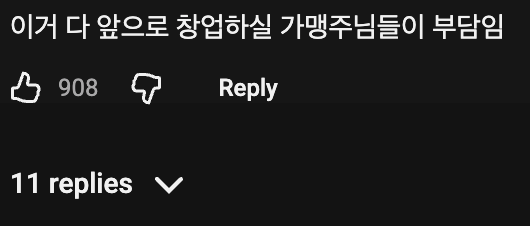
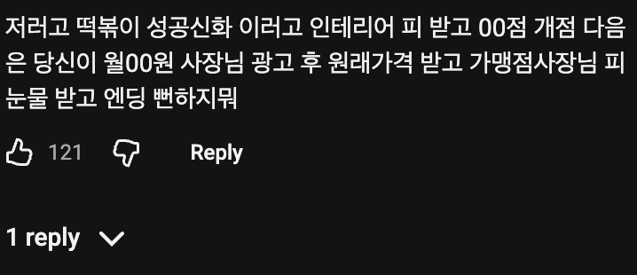

62 · 7 · 7 시간 전 · 원문


수집 당시 댓글 7개
닉네임빈공간다채워넣기이이이이이이이이이 · 6 시간 전
저거보고 들어가서 창업하면 이제 물리는거임 ㅋㅋ
고전부 · 6 시간 전
당연히 튀김, 순대 기성품 안 쓰고 수제로 만드시겠지?
↳ 답글 · 북북춤 · 6 시간 전
???: 아 미치겠네, 제가 쓰던걸 주는겁니까? 새걸 사다가...
싼디스크 · 6 시간 전
고객들만 신났어유~
해먹는게즐거워 · 5 시간 전
저기 가맹신청하는 업주는 경계선이라고봐도 됨?
주관적인요정 · 5 시간 전
가맹하면 개좆된다
살구맛통조림 · 4 시간 전
가맹점주 피빨기 ㅋㅋ
저거보고 들어가서 창업하면 이제 물리는거임 ㅋㅋ